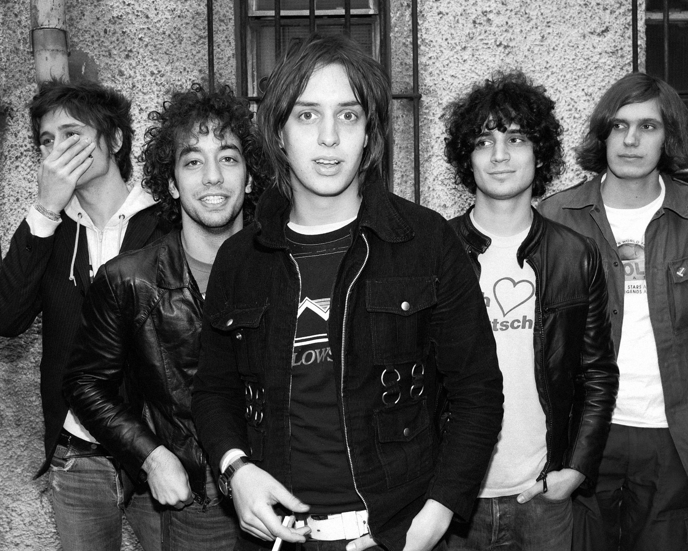

the strokes
The Strokes nació en Nueva York en 1998, cuando sus miembros comenzaron a tocar juntos desde la adolescencia y terminaron formando la alineación clásica con Julian Casablancas, Nick Valensi, Albert Hammond Jr., Nikolai Fraiture y Fabrizio Moretti. La banda empezó ganando fuerza en pequeños clubes del Lower East Side, donde desarrollaron su estilo crudo y directo antes de firmar con una discográfica. Su fama mundial llegó en 2001 con su álbum debut Is This It, considerado uno de los discos más influyentes del rock moderno por su sonido de garage rock minimalista y energético. En 2003 lanzaron Room on Fire, que mantuvo su identidad y reforzó su popularidad. Su tercer disco, First Impressions of Earth (2006), mostró un sonido más experimental y complejo, aunque generó opiniones mixtas. Tras una pausa en la que los miembros se centraron en proyectos individuales, regresaron en 2011 con Angles y en 2013 con Comedown Machine, ambos con un estilo más diverso. Años después volvieron con un sonido renovado en The New Abnormal (2020), considerado un regreso exitoso que mostró madurez musical. The Strokes han sido una influencia clave en la música rock del siglo XXI, inspirando a numerosas bandas con su enfoque fresco y auténtico.
 Not The Same Anymore
Not The Same Anymore Last Nite
Last Nite  The Adults Are Talking
The Adults Are Talking Paranoid Android
Paranoid Android Fake Plastic Trees
Fake Plastic Trees  Karma Police
Karma Police Let Down
Let Down Street Spirit
Street Spirit
 There Is a Light That Never Goes Out
There Is a Light That Never Goes Out This Charming Man
This Charming Man  How Soon Is Now
How Soon Is Now The Boy With the Thorn in His Side
The Boy With the Thorn in His Side Bigmouth Strikes Again
Bigmouth Strikes Again